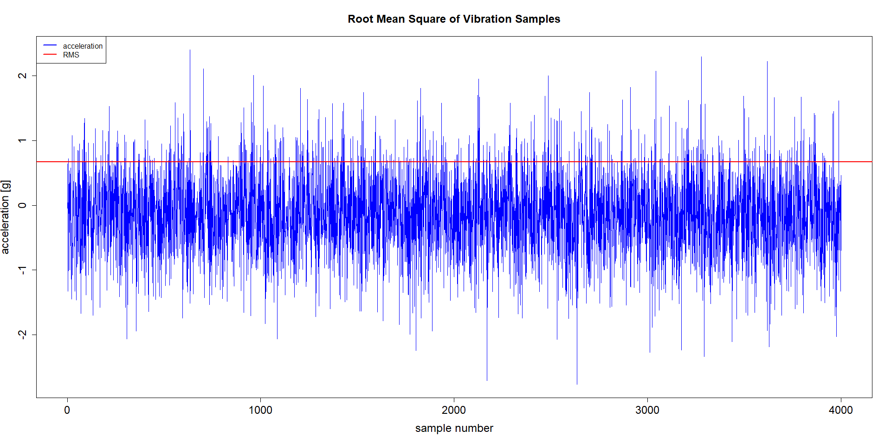

Root Mean Square (RMS)
What does RMS do?
RMS calculates the Root Mean Square of vibration samples over the vibration measurements under a source.
Use cases for the algorithm
Determining trends in the vibration level over time. An increasing trend may indicate a developing failure.
Comparing similar assets in terms of their RMS value.
How does RMS work?
The samples of each measurement are processed according to the following formula:
The unit of the calculated value is the same as the unit of the samples. The plot below shows a series of acceleration samples and the calculated RMS.
Using the algorithm via mvg
Upload vibration time series data to a source.
Request a RMS analysis for the source.
Read the results(see below).
Analysis Parameters
The RMS feature requires no parameters apart from sourceId (sid) and feature (“RMS”).
Structure of the Results
The result returned by the analysis call will be a dictionary containing five lists:
{
'timestamps': [... list of timestamps ...],
'rms': [... list of RMS values ...]
'rms_dc': [... list of RMS values without DC component ...],
'dc': [... list of DC component values ...]
'utilization': [... list with timestamp utilization ...],
}
Notes
The algorithm is agnostic to the scale of the measurements, but the scale for all measurements needs to be consistent.
The root mean square in this implementation is not filtered, so it will neither remove a possible DC offset nor be selective of special frequency bands.